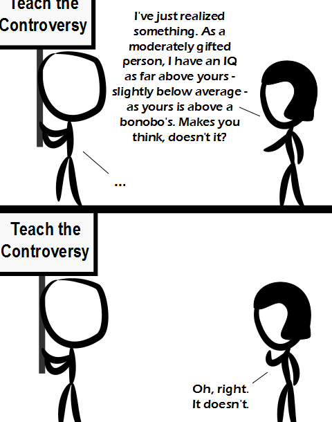

Comic JK 931
When I Feel Like It
⇤
<
?
>
⇥

⇤
<
?
>
⇥
Forum
.
RSS
.
Digg
.
Facebook
.
Reddit
.
Twitter
.
Stumbleupon
_Enter your thoughts on number 931 here. Please, no spamming, trolling, phreaking or comparing people with bonobos. Teach the Controversy. Teach that it is a media fabrication, because controversy sells. Your mother's mind has no controversy because all the truth she needs is on Fox News. It's spelled i-a-m-s-o-d-u-m-b. > It's spelled y-o-u-a-r-e-c-o-r-r-e-c-t >>Hmmph! >>>Pyro? Is that you? ?????? >>>>Do YOU believe in magic? >>>>No, just the mother guy. Is this chat thread safe? Where do I lock the mutex? > However you do it, don't lock the whole internet for writing - the world will simply stop moving for the duration. >> I'm sure we don>> Oh a CS joke, how original!'t have to worry about that. >I proposed one, but nobody gave a *BLEEP* about it. Also the HTML code for this box still has a typo. >>I thought it was good solution. In fact, it's possible everybody thought it was a good idea except for >>>mutex? isn't that what made the Teenage Mutant Ninja Turtles? </snarky> >should've just coded it in haskell... >>OK so about that. Outside of C, C++, Java, C#, VB, PHP, JavaScript/Css/Html, Cobol/RPG(ugh). Are there actual people/organizations that hire programmers specifically to write code in languages other than those? Is there a top 5 list of languages outside of those "normal" ones that people are getting paid for? >> I was hired specifically to write Python, like many other people. >>>langpop.com ? >>>>Yes, Shell scripting, assembly, for some reason ActionScript.... I worked hard for 70! An uninspired joke props up some boring and elitist commentary which is based on the assumption that IQ measurements are precisely meaningful and directly comparable. D-. > Precise? Directly comparable? We're talking about a 45-point difference. No precision required. >> "This difference is equal to this difference" - precision. Also, comparing two animals with different brain structures on the same scale makes no sense. The idea of measuring the performance of something with 100 billion parts with one number is ridiculous anyway. >>> Well, with all the parts in the LHC, there seem to only be a few numbers anyone cares about. Granted, probably more than 1. (At least beam energy & total cross section, plus the mass of the Higgs.) >> Perhaps OP would like us to believe he is JUST as capable as a bonobo, thank you very much. >>>"as capable as a bonobo" ? is that a euphemism ? ( bonobos seem to spend most of their time having sex... and having sex... and having sex... and... did I mention the part about having sex... ) >He's not elitist - you're just anti-success. >Actually, chimps have more heterosexual sex. Bonobos only have more sexual contacts when you include same-sex contacts. Look, this controversy is great and all, but I think it's just a smokescreen to distract us from The Conspiracy. Teach "The Conspiracy" I say! >Teach basic literacy and numeracy I say... >>+1 IQ is not a linear scale. That is all. > I think IQ is. Intelligence certainly isn�t, however. >> IQ is based on a Gauss distribution. We have the same amount of people at IQ=70 as at IQ=130; but that doesn't make it a linear scale in the pedantic sense, since there's a maximum at IQ=100, it can't be linear. OTOH, IQ tests are still a CENSORED piece of steaming CENSORED CENSORED deserving of censorship. >>> this->plusOne(); >>Feynman famously scored 125 in an IQ test in his teens. The "Flynn Effect" is the documented fact that IQ scores have been rising steadily ever since IQ tests were created. So Feynman's 125 *then* is supposedly equivalent to 105 or lower *now*... >>>If the scores are rising, an old 125 should be more than 125 today, right? Anyway, an IQ test simply evaluates the performance at IQ tests. >>>>Scores _on the same exams_ are rising, ie the average person is getting smarter, so we have to recalibrate the average. Modern 105 = old 125. >>>>>ironically, both replies seem to have missed my point that if IQ tests were truely measuring "intelligence", the Flynn Effect would imply *the average* teenager today is a Feynman-equivalent... ( let's just say I have my doubts on that... ) >>>>>Oh, yes, what a fine way of demonstrating that correlation is not causation. You know, if you did the same exam more than one time, do you expect to get worse? Or, if we're more practical, do you expect to get worse when you can just wave a certified number in front of someones face and feel superior/entitled to a good future/whatevs AND you can practice for that exam? Ehh... >>>>>>erm... the Flynn Effect isn't "people getting better by practising"... it's year-on-year improvements in individuals taking the test for the first time... June 23rd... it's Alan Turing's 1st birthday...